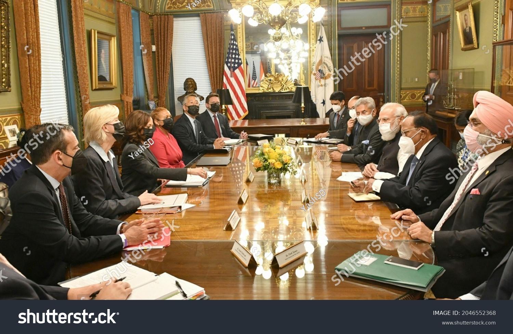
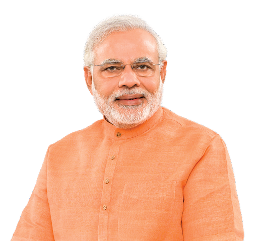

Born on August 12,1999, in Ahmedabad .Remembered as founding father
of Indian space programme, had set up physical Research laboratory
in 1947
Often remembered as an innovator ,indus-trialist and poineer of
space programmes, he was the first one to sow the seed of india's
moon mission by convincing govt.
It is in his honour that the ISRO had named its major space research
centre in Thiruvananthapuram as the Vikram sarabhai space centre.
Chandrayan 2 is a three component mission comprising an orbiter , a
lander and a rover .The lander 'Vikram' was named ofter Dr Vikram A
Sarabhai.
OF KHATRON KE KHILADI MODI & PEACEFUL EID
IN KASHMIR
|


There was a feel good factor and a festive
fervopur all around . With the abrogation of Article 370 and a
PEACEFUL EID in the country and in kashmir especially . It was enough
reason for the centrol government to heave a sigh of relief . On
Monday night ,when peaple feasted on the occasipon of EID ,entire
india watched one thing ...in common...that's right ,PM Narendra
Modi's Man vs Wild programme with bear grylls on discovery channel .
shot some time back ,the show was arid on the action channel at 9pm on
Monday .PM Modi who is known for his physical fitness and being a
regular on the yoga mat , stunned million for Indians as he embarked
on a rare adventure in uttarakhand's jim corbett national park with
bear grylls in a special episode of man vs wild. The show revealed
some interesting anecdotes on how PM Modi used to create bathing salts
from dew as a child ,or his "rendezvous" with wild -life during
childhood. During the show ,when bear pointed out the dangers lurking
in their vicinity,PM Modi fearlessly said , "We" should not take this
place as a danger zone . When we go against nature then
everything becomes dangerous; human beings too
become dangerous .
RAFT-AR SE:Stills from Discovery's popular
show ,Man vs featuring Prime minister Narendra Modi and Bear Grylls. The
show was telecast at 9 pm IST on Monday.